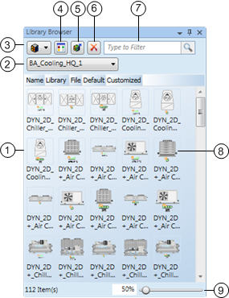
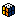
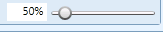
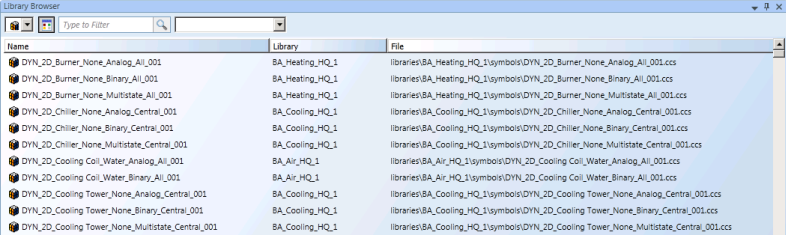

Graphics Editor Library Browser

Depending on which view you are in, Symbols or graphic templates, the Library Browser view provides you with a thumbnail preview of the available graphic objects.
Library Browser View (Thumbnail View) | ||
| Name | Description |
1 | Library Browser pane. | Displays available Symbols and graphic templates depending on category or search criteria. |
2 | Filter by Library | Allows you to display all the Symbols or graphic templates in your project libraries or just display the graphic objects from the library selected in the drop-down menu. |
3 | Symbols\Graphic Templates Toggle | Allows you to switch between displaying and viewing Symbols  or graphic template library objects in the view. |
4 | Thumbnail\List View Toggle | Allows you to toggle between a thumbnail or list view of the graphic objects in the Library Browser pane. |
5 | Update Symbols Library/Libraries | Allows you to perform a server reload for the Symbol Library selected in the Symbol filter, or, if no library is displayed in the Symbol filter, then all Symbol libraries are reloaded. |
6 | Delete | Deletes the selected Symbol from the Symbol library. |
7 | Search Filter | Allows you to search the Symbol and Graphic Templates libraries and limit the objects displayed. |
8 | Graphic Icons | Thumbnails of available Symbols or graphic templates, depending on which mode you have selected. The selected Symbol or Graphic Template is highlighted. |
9 |  | Allows you to move the slider with your mouse to increase and decrease the magnification of the selected Symbol icon for viewing within the Symbol Browser view. The magnification value displays as you move the slider and has a minimum magnification of 30% and a maximum of 300%. The slider displays only when you have toggled to the Symbol thumbnail view. |
In the list view of the Library Browser, the Symbols and graphic templates are listed by Name, Library, and File. A thumbnail preview is not displayed.

Library Browser View (List View Fields) | |
Name | Description |
Name | Displays the Symbol or graphic template file names. |
Library | Displays the library name where the Symbol or graphic template is stored. |
File | Displays the full path of the Symbol or graphic template’s location. |
Customize | If a Symbol or graphic template has a customized version, the file path is displayed in the column. |
Related Topics
For background information, see Library Browser - Graphics Editor.
For related procedures, see Working with the Graphics Editor Library Browser.